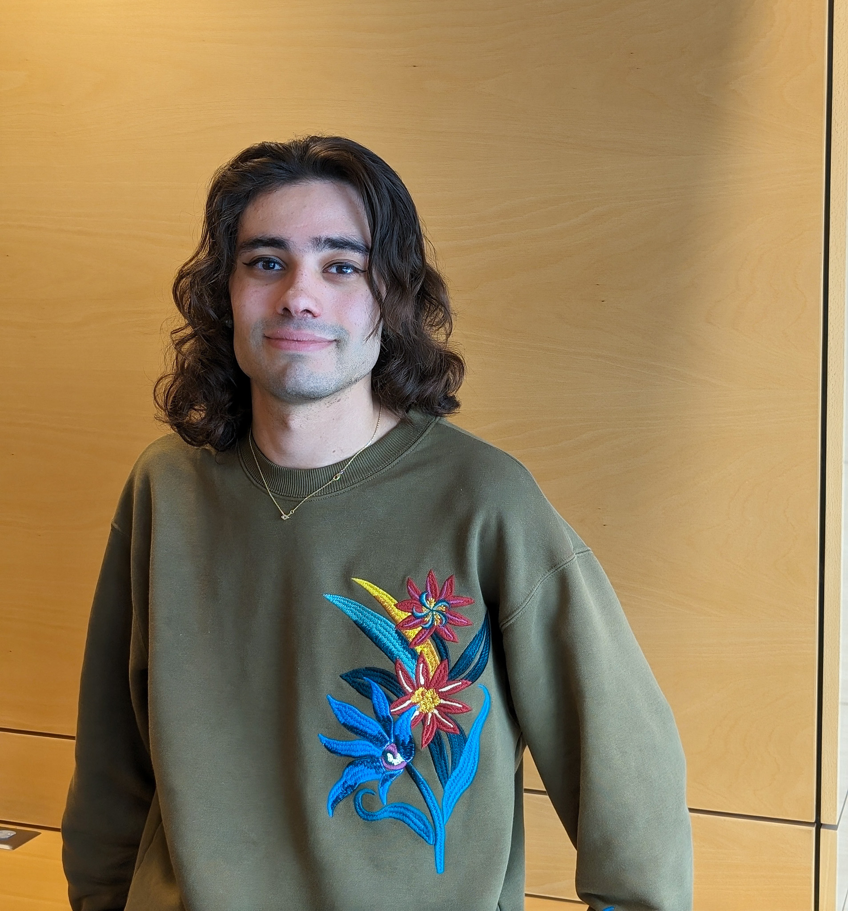

hi, i'm omar !
✨ As your senator for the Bioinformatics and Computational Biology curriculum, I would be committed to bridging the gap between data and community! Together, we can enhance our academic experience, foster collaboration, and ensure every voice is heard. Let’s decode the future of our program—vote for progress, vote for innovation! ✨
🔬🐱🧶🛩️🕹️🌈
$ > who am i
Scientist by day, crochet and aviation enthusiast by night, I have a mission to bring diversity, inclusion, and a sense of community to UNC. My passion for science was handed down to me by my grandfather and my mother. As a young child growing up in Lebanon, I had the privilege of having a family who supported my education. My grandfather taught me math and science through experiments he used to teach his own students. Later on, when I was 12, my mother brought me into her lab at the University of Pittsburgh where she taught me how to use a microscope. Two years later, I became a regular in the lab, learning everything from three-zone streaks to bacterial transformation for my science fair project.
So, it's no wonder to me why I not only have a passion for science but for the scientific community. During my undergraduate years, I worked to expand this community by advocating for more undergraduate research participation and helped foster a network of aspiring young scientists. Just before starting graduate school, I spent two years as an NIH postbac fellow where I expanded my passions for scientific advocacy, communication, and inclusion. I had some difficult times during this period of my life, but it has taught me so much about science culture and ethics and as a result I have learned to advocate not only for myself but for others as well.
Outside of science, I am a huuuuge AvGeek (i.e., aviation geek). I spend a lot of my time sitting on my porch watching planes takeoff and land at RDU or flying on my simulator. When I'm not plane watching or fake-plane flying, I'm usually crocheting (currently working on a runner for my dining table) or practicing with my electric cello.
hjk,jhvukgui <- real message from my cat, Louis.
$ > why is this election important?
Our school is in danger of becoming a vehicle for partisan politics in North Carolina. The recent coronation selection of Lee Roberts as our permanent Chancellor signals a complete indifference from university administrators to the needs of students. Lee Roberts' term as Interim Chancellor has been shrouded in controversy and threatens to sow deep divisions on our campus. In just a few months he has stripped students of their leadership of the UNC Honor Court, a legacy that had lasted over a hundred years until now, allowed police to brutalize students on campus, and raised questions about his partisan ties. It's now more important than ever to make our voices as graduate students heard and ensure that we enact meaningful change that supports students and does not enable the University to be a vessel of any external political agenda.
From policy reforms to enhancing our day-to-day experiences as students, this election is our opportunity to create a campus environment that truly supports us all.
$ > what would i do for bcb?
If elected as senator, I hope to tackle an array of issues that affect BCB students, including working publicizing and increasing visibility of funding opportunities, facilitating more social events, and organizing networking opportunities for our students. I also believe BCB should engage in unique outreach opportunities to educate aspiring scientists about the nature of computational research. BCB is a unique program in the School of Medicine; I thought being in this program would be isolating given the nature of computational work, but it has proved the exact opposite. We have an amazing and supportive community of students which should not be taken for granted. Therefore, as senator, it would be my goal to continue to foster and encourage this dynamic, while providing opportunities for BCB students to advance themselves personally and professionally as well as form closer bonds with their fellow students. This type of community-building will not only allow peers to form relationships that will last the rest of their careers, but also to help mitigate burnout, provide a social safety net, and create a better learning environment.
$ > why should you elect me as your gpsg senator?
Electing me as your GPSP Senator means choosing a leader with a lifelong passion for science, a commitment to community, and a proven track record of advocating for students. I understand the unique challenges we face, and I am dedicated to ensuring that our voices are not only heard but that they drive meaningful change at UNC. As your senator, I would fight to safeguard our community, advocate for transparency, and work tirelessly to create an environment where all students can thrive, both personally and professionally. Together, we can create a campus culture that not only fosters academic excellence but also nurtures lasting relationships and well-being.
Your vote is a vote for a more inclusive, supportive, and student-centered campus. Join me in making a difference and building a future community together.
Sincerely,